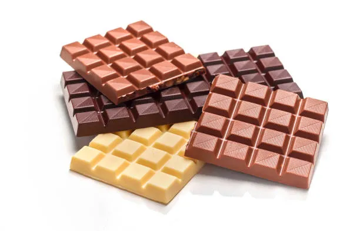

Home

Forzen Hershey Bar
Frozen Hershey bars: a bold reinvention of classic confectionery, where smooth milk chocolate is transformed into a crisp, glacial indulgence that shatters expectations (and possibly molars). It’s the dessert equivalent of a plot twist—simple, dramatic, and undeniably delicious.
Recipe
Prep Time: 10 seconds
Freeze Time: As long as your willpower holds out (estimated: 15 minutes)
Ingridents
- 1 Hershey bar (or 7, who are we kidding)
- A freezer that hasn’t turned into a popsicle graveyard
Instructions
- Unwrap the Hershey bar with the reverence of opening an ancient treasure.
- Place it gently in the freezer like you're putting a baby to bed—except colder and more delicious.
- Wait patiently. Or impatiently. Stare through the freezer window if necessary.
- Remove when rock-solid and bite into it like you’ve got dental insurance.
- Experience the rich, frozen snap of chocolate while wondering why this isn’t a Michelin-starred dessert.
Pro tip: If it breaks a tooth, that’s just chocolate reminding you who's boss.